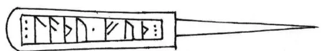

Material Grimoire
Carving Tool

Overview
A carving tool is a specialized pointed instrument dedicated to the art of inscribing runes and other magickal symbols onto surfaces of all kinds.
The Runic Carver (Ristir)
In the Nordic runic tradition, a special carver called the ristir is used to etch runes into all types of surfaces. The ristir should be extremely pointed and sharp. It is often the most practical tool for the carving of runes.
Construction
The ristir may bear the runic form of the vitki's name or a magickal formula expressing the purpose of the tool.
Traditional Inscription
One traditional model bears the inscription lathu futh: "I (which means both the vitki and the ristir) invoke, or load, the futh." The final three-rune formula is the first three staves of the row and represents the entire Futhark. This formula may be called "the womb of the runes" (Old Norse fudh means vulva and vagina).
The numerical analysis of this formula is 36, or 4 × 9.